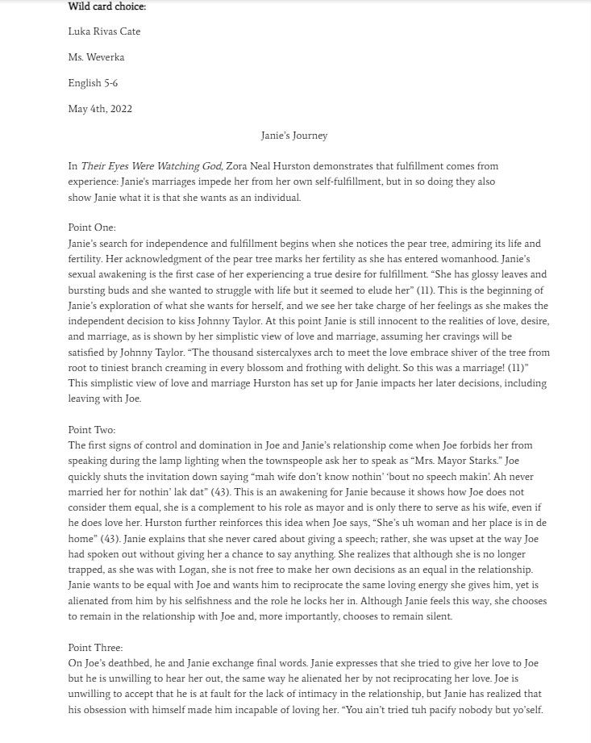

This project was an english assingment where we had to modle the style and subject of two poets. The first is Robert
Forst and the second is Walt Witman. I really enjoyed writing the peoms because it was a lot more challanging than I
expected. I particularly like the Robert frost one because I think I was able to encapsulate his style well.
This project presents a portfolio of writings from my Junior year. The writings placed in this portfolio are
some of my favorite pieces from the year, and are representative of the skills I’ve cultivated and the effort
I’ve put forth throughout the year. In addition, I include a reflective letter that summarizes each of the chosen pieces.